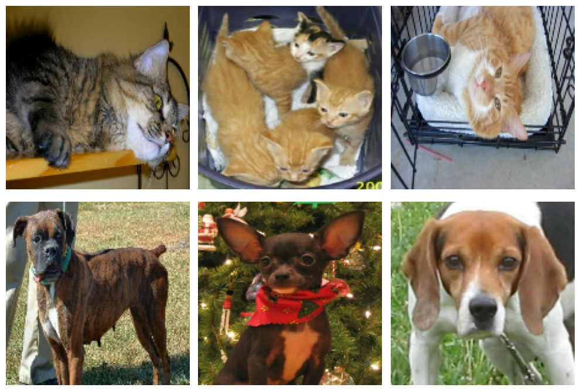
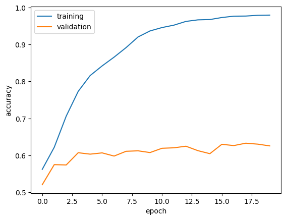
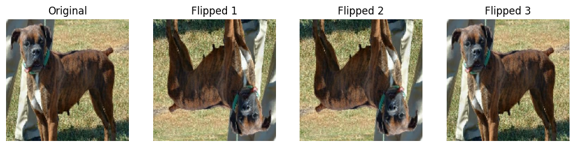
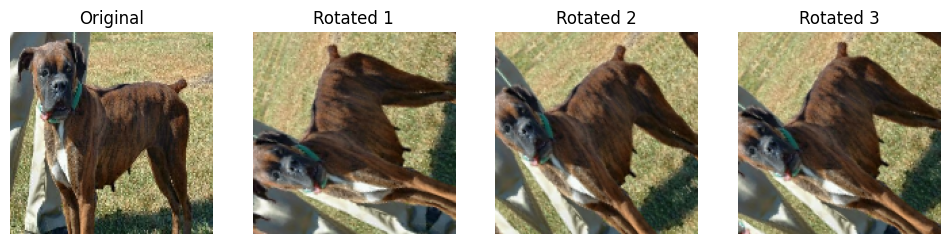
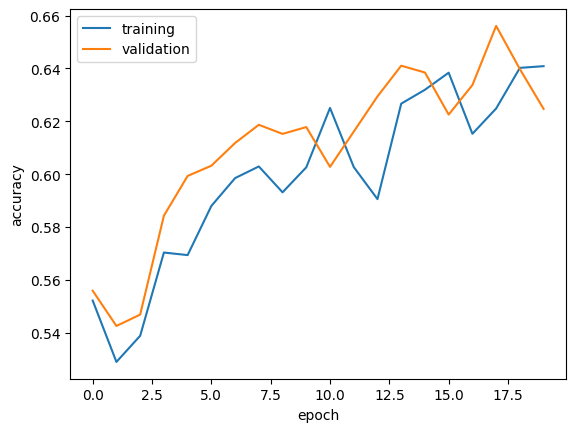
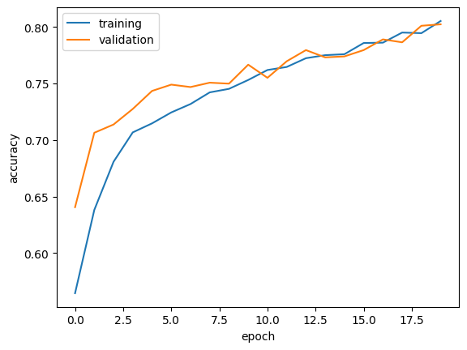
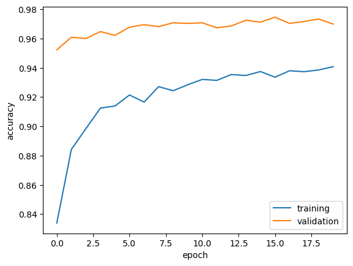

import os
import numpy as np
import matplotlib.pyplot as plt
from tensorflow import keras
from keras import utils
import tensorflow_datasets as tfdsHello, today we’ll tackle the challenge of teaching a machine learning model to classify images of cats and dogs using TensorFlow and Keras. We’ll explore the following concepts:
- Loading and preprocessing data with TensorFlow Datasets.
- Building and training deep learning models.
- Using data augmentation to improve model robustness.
- Exploring transfer learning to achieve high accuracy efficiently.
By the end of this tutorial, we’ll demonstrate how to achieve a validation accuracy of over 93% using transfer learning!
1. Load Packages and Obtain Data
First, we’ll load the required libraries:
We’ll use the cats_vs_dogs dataset from TensorFlow Datasets, which contains labeled images of cats and dogs. We’ll split it into training, validation, and testing datasets, reserving 40% for training and 10% each for validation and testing.
train_ds, validation_ds, test_ds = tfds.load(
"cats_vs_dogs",
# 40% for training, 10% for validation, and 10% for test (the rest unused)
split=["train[:40%]", "train[40%:50%]", "train[50%:60%]"],
as_supervised=True, # Include labels
)
print(f"Number of training samples: {train_ds.cardinality()}")
print(f"Number of validation samples: {validation_ds.cardinality()}")
print(f"Number of test samples: {test_ds.cardinality()}")Downloading and preparing dataset 786.67 MiB (download: 786.67 MiB, generated: 1.04 GiB, total: 1.81 GiB) to /root/tensorflow_datasets/cats_vs_dogs/4.0.1...WARNING:absl:1738 images were corrupted and were skippedDataset cats_vs_dogs downloaded and prepared to /root/tensorflow_datasets/cats_vs_dogs/4.0.1. Subsequent calls will reuse this data.
Number of training samples: 9305
Number of validation samples: 2326
Number of test samples: 2326Since the dataset contains images of different sizes, we’ll resize them to a fixed size of 150x150.
2. Data Preprocessing
Resizing Images
The dataset contains images of varying sizes. To standardize input, we’ll resize all images to 150x150 pixels:
resize_fn = keras.layers.Resizing(150, 150)
train_ds = train_ds.map(lambda x, y: (resize_fn(x), y))
validation_ds = validation_ds.map(lambda x, y: (resize_fn(x), y))
test_ds = test_ds.map(lambda x, y: (resize_fn(x), y))Optimizing Data Loading
We’ll batch the dataset into groups of 64 images and use prefetching to load data efficiently:
from tensorflow import data as tf_data
batch_size = 64
train_ds = train_ds.batch(batch_size).prefetch(tf_data.AUTOTUNE).cache()
validation_ds = validation_ds.batch(batch_size).prefetch(tf_data.AUTOTUNE).cache()
test_ds = test_ds.batch(batch_size).prefetch(tf_data.AUTOTUNE).cache()Visualizing the Dataset
To ensure the dataset is loaded correctly, let’s visualize a few examples. We’ll write a function to display three images of cats and three images of dogs:
def visualize_cats_and_dogs(dataset):
# set 2x3 subplot
fig, axes = plt.subplots(2, 3, figsize=(10, 7))
cats = 0
dogs = 0
for images, labels in dataset.unbatch():
if labels == 0 and cats < 3: # If Label 0: Cat
axes[0, cats].imshow(images.numpy().astype("uint8"))
axes[0, cats].axis("off")
cats += 1
elif labels == 1 and dogs < 3: # If Label 1: Dog
axes[1, dogs].imshow(images.numpy().astype("uint8"))
axes[1, dogs].axis("off")
dogs += 1
# Stop when 3 cats and 3 dogs are plotted
if cats == 3 and dogs == 3:
break
plt.tight_layout()
plt.show()# Call the function to visualize
visualize_cats_and_dogs(train_ds)
So cute!!
Check Label Frequencies and Calculate Baseline Accuracy
To evaluate our model, we first need to calculate the baseline accuracy. The baseline is the accuracy of always predicting the most frequent class.
labels_iterator= train_ds.unbatch().map(lambda image, label: label).as_numpy_iterator()
# Count occurrences of each label
label_counts = {0: 0, 1: 0} # 0: cat, 1: dog
for label in labels_iterator:
label_counts[label] += 1
print(f"Cats: {label_counts[0]} images")
print(f"Dogs: {label_counts[1]} images")Cats: 4637 images
Dogs: 4668 imagestotal_images = label_counts[0] + label_counts[1]
most_frequent_label_count = max(label_counts.values())
baseline_accuracy = most_frequent_label_count / total_images
print(f"Baseline accuracy: {baseline_accuracy:.2%}")Baseline accuracy: 50.17%So our baseline accuracy is 50.17%. We need to do better than this in order to have created a good model! (If not, our model’s predictions are no better than random guessing!)
3. First Model
Our first model is a convolutional neural network (CNN) with the following layers:
- Two
Conv2Dlayers for feature extraction. - Two
MaxPooling2Dlayers for downsampling. - A
Flattenlayer to prepare data for dense layers. - A
Denselayer for classification. - A
Dropoutlayer for regularization.
Before training, we compile the model with the following configurations: - Optimizer: We use the Adam optimizer, a popular choice for training deep learning models due to its efficiency and adaptive learning rates. - Loss Function: The binary cross-entropy loss function is used because we are solving a binary classification problem (cats or dogs) - Metrics: Used to track the model’s accuracy during training and validation.
from tensorflow.keras.models import Sequential
from tensorflow.keras.layers import Conv2D, MaxPooling2D, Flatten, Dense, Dropout# Define the model
model1 = Sequential([
Conv2D(32, (3, 3), activation='relu', input_shape=(150, 150, 3)), # First convolutional layer to detect features
MaxPooling2D(pool_size=(2, 2)), # Reduces size of the feature map
Conv2D(64, (3, 3), activation='relu'), # Second convolutional layer for more complex features
MaxPooling2D(pool_size=(2, 2)), # Further reduces feature map size
Flatten(), # Flattens the 2D data into 1D for the next layers
Dense(128, activation='relu'), # Fully connected layer with 128 neurons
Dropout(0.5), # Drops 50% of neurons randomly to prevent overfitting
Dense(1, activation='sigmoid') # Output layer with one neuron for binary classification
])
# Compile the model
model1.compile(optimizer='adam',
loss='binary_crossentropy',
metrics=['accuracy']) # track accuracy during compilation
# Train the model
history = model1.fit(
train_ds,
epochs=20,
validation_data=validation_ds
)/usr/local/lib/python3.10/dist-packages/keras/src/layers/convolutional/base_conv.py:107: UserWarning: Do not pass an `input_shape`/`input_dim` argument to a layer. When using Sequential models, prefer using an `Input(shape)` object as the first layer in the model instead.
super().__init__(activity_regularizer=activity_regularizer, **kwargs)Epoch 1/20
146/146 ━━━━━━━━━━━━━━━━━━━━ 19s 84ms/step - accuracy: 0.5490 - loss: 58.3230 - val_accuracy: 0.5206 - val_loss: 0.6913
Epoch 2/20
146/146 ━━━━━━━━━━━━━━━━━━━━ 7s 32ms/step - accuracy: 0.6006 - loss: 0.6581 - val_accuracy: 0.5748 - val_loss: 0.6807
Epoch 3/20
146/146 ━━━━━━━━━━━━━━━━━━━━ 5s 31ms/step - accuracy: 0.6909 - loss: 0.5682 - val_accuracy: 0.5739 - val_loss: 0.7301
Epoch 4/20
146/146 ━━━━━━━━━━━━━━━━━━━━ 5s 32ms/step - accuracy: 0.7471 - loss: 0.4790 - val_accuracy: 0.6071 - val_loss: 0.8223
Epoch 5/20
146/146 ━━━━━━━━━━━━━━━━━━━━ 5s 31ms/step - accuracy: 0.7979 - loss: 0.4159 - val_accuracy: 0.6032 - val_loss: 0.8988
Epoch 6/20
146/146 ━━━━━━━━━━━━━━━━━━━━ 5s 31ms/step - accuracy: 0.8224 - loss: 0.3812 - val_accuracy: 0.6066 - val_loss: 0.9950
Epoch 7/20
146/146 ━━━━━━━━━━━━━━━━━━━━ 5s 32ms/step - accuracy: 0.8600 - loss: 0.3242 - val_accuracy: 0.5980 - val_loss: 0.9706
Epoch 8/20
146/146 ━━━━━━━━━━━━━━━━━━━━ 5s 31ms/step - accuracy: 0.8758 - loss: 0.2910 - val_accuracy: 0.6109 - val_loss: 1.3110
Epoch 9/20
146/146 ━━━━━━━━━━━━━━━━━━━━ 5s 32ms/step - accuracy: 0.9105 - loss: 0.2286 - val_accuracy: 0.6122 - val_loss: 1.5633
Epoch 10/20
146/146 ━━━━━━━━━━━━━━━━━━━━ 5s 31ms/step - accuracy: 0.9250 - loss: 0.1893 - val_accuracy: 0.6075 - val_loss: 1.6101
Epoch 11/20
146/146 ━━━━━━━━━━━━━━━━━━━━ 5s 32ms/step - accuracy: 0.9400 - loss: 0.1503 - val_accuracy: 0.6191 - val_loss: 1.4108
Epoch 12/20
146/146 ━━━━━━━━━━━━━━━━━━━━ 5s 32ms/step - accuracy: 0.9514 - loss: 0.1440 - val_accuracy: 0.6204 - val_loss: 1.5965
Epoch 13/20
146/146 ━━━━━━━━━━━━━━━━━━━━ 5s 32ms/step - accuracy: 0.9575 - loss: 0.1263 - val_accuracy: 0.6247 - val_loss: 1.7014
Epoch 14/20
146/146 ━━━━━━━━━━━━━━━━━━━━ 5s 32ms/step - accuracy: 0.9643 - loss: 0.1024 - val_accuracy: 0.6126 - val_loss: 1.8296
Epoch 15/20
146/146 ━━━━━━━━━━━━━━━━━━━━ 5s 31ms/step - accuracy: 0.9688 - loss: 0.0940 - val_accuracy: 0.6045 - val_loss: 1.5185
Epoch 16/20
146/146 ━━━━━━━━━━━━━━━━━━━━ 5s 31ms/step - accuracy: 0.9751 - loss: 0.0789 - val_accuracy: 0.6298 - val_loss: 1.7133
Epoch 17/20
146/146 ━━━━━━━━━━━━━━━━━━━━ 5s 32ms/step - accuracy: 0.9775 - loss: 0.0751 - val_accuracy: 0.6264 - val_loss: 1.8337
Epoch 18/20
146/146 ━━━━━━━━━━━━━━━━━━━━ 5s 31ms/step - accuracy: 0.9775 - loss: 0.0620 - val_accuracy: 0.6328 - val_loss: 2.0004
Epoch 19/20
146/146 ━━━━━━━━━━━━━━━━━━━━ 5s 32ms/step - accuracy: 0.9789 - loss: 0.0689 - val_accuracy: 0.6303 - val_loss: 1.9404
Epoch 20/20
146/146 ━━━━━━━━━━━━━━━━━━━━ 5s 31ms/step - accuracy: 0.9791 - loss: 0.0786 - val_accuracy: 0.6255 - val_loss: 1.6583Let’s plot our training and validation accuracies for easier understanding:
plt.plot(history.history["accuracy"], label = "training")
plt.plot(history.history["val_accuracy"], label = "validation")
plt.gca().set(xlabel = "epoch", ylabel = "accuracy")
plt.legend()
Nice! We can see that the traing accuracy is much separated from the validation accuaracy, settling at around 98%, with the validation accuracy settling at around 60%.
To get to this model I tried the following:
- Adjusted the number of filters in Conv2D layers (from 64 to 32) to reduce overfitting.
- Decreased the dropout rate from 0.7 to 0.5 to deal with underfitting.
- The validation accuracy of model1 stabilized between 60% and 63% during training.
- This is significantly better than the baseline accuracy of 50.17% (which assumes the model always guesses the majority class).
- The training accuracy reached around 98% whiile the validation accuracy reached only around 65%. This is a clear sign of overfitting as the model is learning to fit the training data extremely well but struggles to generalize to unseen validation data.
Not bad, but we can do better!
4. Model with Data Augmentation
Now let’s try data augmentation to enhance our training data. Augmentation generates modified versions of existing images, such as flipped or rotated images, which helps the model generalize better to unseen data. We’ll use RandomFlip and RandomRotation layers to augment the data.
First let’s visualize how RandomFlip alters an image:
from tensorflow.keras.layers import RandomFlip, RandomRotationrandom_flip = RandomFlip("horizontal_and_vertical")
# pull example image from dataset
for image, label in train_ds.take(1):
original_image = image[0].numpy().astype("uint8")
break
plt.figure(figsize=(12, 6))
# Original image
plt.subplot(1, 4, 1)
plt.imshow(original_image)
plt.title("Original")
plt.axis("off")
# Generate flipped images
for i in range(2, 5):
flipped_image = random_flip(original_image[np.newaxis, ...]).numpy()[0].astype("uint8")
plt.subplot(1, 4, i)
plt.imshow(flipped_image)
plt.title(f"Flipped {i-1}")
plt.axis("off")
plt.show()
How about RandomRotation?
random_rotation = RandomRotation(0.2) # rotate 20 degrees
plt.figure(figsize=(12, 6))
# Original image
plt.subplot(1, 4, 1)
plt.imshow(original_image)
plt.title("Original")
plt.axis("off")
# Generate rotated images
for i in range(2, 5):
rotated_image = random_rotation(original_image[np.newaxis, ...]).numpy()[0].astype("uint8")
plt.subplot(1, 4, i)
plt.imshow(rotated_image)
plt.title(f"Rotated {i-1}")
plt.axis("off")
plt.show()
Okay so now we’ve seen how flipping and rotating an image works, let’s build a new model incorporating the data augmentation layers. We’ll add RandomFlip and RandomRotation as the first layers of the model to ensure every input image is augmented. The remaining layers are similar to a standard convolutional neural network (CNN).
model2 = Sequential([
# Data augmentation layers
RandomFlip("horizontal_and_vertical"),
RandomRotation(0.2),
# Convolutional and pooling layers, same as model1
Conv2D(32, (3, 3), activation='relu', input_shape=(150, 150, 3)),
MaxPooling2D(pool_size=(2, 2)),
Conv2D(64, (3, 3), activation='relu'),
MaxPooling2D(pool_size=(2, 2)),
Flatten(),
Dense(128, activation='relu'),
Dropout(0.5),
Dense(1, activation='sigmoid')
])
# Compile the model
model2.compile(optimizer='adam',
loss='binary_crossentropy',
metrics=['accuracy'])
# Train the model
history2 = model2.fit(
train_ds,
epochs=20,
validation_data=validation_ds
)Epoch 1/20
146/146 ━━━━━━━━━━━━━━━━━━━━ 13s 49ms/step - accuracy: 0.5349 - loss: 68.1902 - val_accuracy: 0.5559 - val_loss: 0.6837
Epoch 2/20
146/146 ━━━━━━━━━━━━━━━━━━━━ 7s 45ms/step - accuracy: 0.5243 - loss: 0.6930 - val_accuracy: 0.5426 - val_loss: 0.6841
Epoch 3/20
146/146 ━━━━━━━━━━━━━━━━━━━━ 7s 45ms/step - accuracy: 0.5316 - loss: 0.6899 - val_accuracy: 0.5469 - val_loss: 0.6804
Epoch 4/20
146/146 ━━━━━━━━━━━━━━━━━━━━ 7s 45ms/step - accuracy: 0.5519 - loss: 0.6841 - val_accuracy: 0.5843 - val_loss: 0.6783
Epoch 5/20
146/146 ━━━━━━━━━━━━━━━━━━━━ 10s 44ms/step - accuracy: 0.5544 - loss: 0.6845 - val_accuracy: 0.5993 - val_loss: 0.6651
Epoch 6/20
146/146 ━━━━━━━━━━━━━━━━━━━━ 10s 44ms/step - accuracy: 0.5874 - loss: 0.6759 - val_accuracy: 0.6032 - val_loss: 0.6646
Epoch 7/20
146/146 ━━━━━━━━━━━━━━━━━━━━ 6s 44ms/step - accuracy: 0.5899 - loss: 0.6732 - val_accuracy: 0.6118 - val_loss: 0.6599
Epoch 8/20
146/146 ━━━━━━━━━━━━━━━━━━━━ 10s 46ms/step - accuracy: 0.5958 - loss: 0.6753 - val_accuracy: 0.6187 - val_loss: 0.6541
Epoch 9/20
146/146 ━━━━━━━━━━━━━━━━━━━━ 10s 45ms/step - accuracy: 0.5879 - loss: 0.6754 - val_accuracy: 0.6152 - val_loss: 0.6565
Epoch 10/20
146/146 ━━━━━━━━━━━━━━━━━━━━ 10s 44ms/step - accuracy: 0.5966 - loss: 0.6665 - val_accuracy: 0.6178 - val_loss: 0.6604
Epoch 11/20
146/146 ━━━━━━━━━━━━━━━━━━━━ 6s 44ms/step - accuracy: 0.6149 - loss: 0.6607 - val_accuracy: 0.6028 - val_loss: 0.6613
Epoch 12/20
146/146 ━━━━━━━━━━━━━━━━━━━━ 10s 45ms/step - accuracy: 0.6031 - loss: 0.6674 - val_accuracy: 0.6161 - val_loss: 0.6587
Epoch 13/20
146/146 ━━━━━━━━━━━━━━━━━━━━ 6s 43ms/step - accuracy: 0.5590 - loss: 0.6823 - val_accuracy: 0.6294 - val_loss: 0.6523
Epoch 14/20
146/146 ━━━━━━━━━━━━━━━━━━━━ 6s 44ms/step - accuracy: 0.6255 - loss: 0.6593 - val_accuracy: 0.6410 - val_loss: 0.6449
Epoch 15/20
146/146 ━━━━━━━━━━━━━━━━━━━━ 6s 43ms/step - accuracy: 0.6282 - loss: 0.6569 - val_accuracy: 0.6384 - val_loss: 0.6435
Epoch 16/20
146/146 ━━━━━━━━━━━━━━━━━━━━ 6s 44ms/step - accuracy: 0.6314 - loss: 0.6539 - val_accuracy: 0.6225 - val_loss: 0.6508
Epoch 17/20
146/146 ━━━━━━━━━━━━━━━━━━━━ 6s 43ms/step - accuracy: 0.6069 - loss: 0.6642 - val_accuracy: 0.6337 - val_loss: 0.6413
Epoch 18/20
146/146 ━━━━━━━━━━━━━━━━━━━━ 6s 44ms/step - accuracy: 0.6202 - loss: 0.6539 - val_accuracy: 0.6561 - val_loss: 0.6310
Epoch 19/20
146/146 ━━━━━━━━━━━━━━━━━━━━ 7s 45ms/step - accuracy: 0.6320 - loss: 0.6515 - val_accuracy: 0.6397 - val_loss: 0.6435
Epoch 20/20
146/146 ━━━━━━━━━━━━━━━━━━━━ 6s 44ms/step - accuracy: 0.6314 - loss: 0.6494 - val_accuracy: 0.6247 - val_loss: 0.6496Like before, let’s visualize our model’s training and testing accuracies:
plt.plot(history2.history["accuracy"], label = "training")
plt.plot(history2.history["val_accuracy"], label = "validation")
plt.gca().set(xlabel = "epoch", ylabel = "accuracy")
plt.legend()
- The validation accuracy of model2 stabilized between 62% and 64% during training.
- Compared to model1 which stabilized at around 60 to 63%, this is slightly better.
- The training accuracy reached around 63%, while while the validation accuracy also reached around 63%. Compared to model1, which achieved a much higher training accuracy of 98% and showed clear signs of overfitting, model2 demonstrates significantly less overfitting. This suggests that the addition of data augmentation helped the model generalize better to unseen data.
Compared to model1, this is definitely an improvement! Let’s take it a step further.
5. Data Preprocessing
For our next model, let’s start by normalizing the pixel values in our images. Neural networks often perform better when input values fall within a consistent range. Here, we’ll rescale pixel values from [0, 255] to [-1, 1] using the Rescaling layer:
# define preprocessing layer
i = keras.Input(shape=(150, 150, 3))
# The pixel values have the range of (0, 255), but many models will work better if rescaled to (-1, 1.)
# outputs: `(inputs * scale) + offset`
scale_layer = keras.layers.Rescaling(scale=1 / 127.5, offset=-1)
x = scale_layer(i)
preprocessor = keras.Model(inputs = i, outputs = x)We’ll integrate this preprocessing step into our new model, Model 3:
model3 = Sequential([
# Preprocessing layer to normalize inputs
preprocessor,
# Data augmentation layers
RandomFlip("horizontal_and_vertical"),
RandomRotation(0.2),
# Convolutional and pooling layers
Conv2D(32, (3, 3), activation='relu'),
MaxPooling2D(pool_size=(2, 2)),
Conv2D(64, (3, 3), activation='relu'),
MaxPooling2D(pool_size=(2, 2)),
Conv2D(128, (3, 3), activation='relu'), # add an additional convolution layer for increased accuracy
MaxPooling2D(pool_size=(2, 2)),
Flatten(),
Dense(128, activation='relu'),
Dropout(0.3), # decreased dropout for higher accuracy
Dense(1, activation='sigmoid')
])
# Compile the model
model3.compile(optimizer='adam', # start with a smaller learning rate
loss='binary_crossentropy',
metrics=['accuracy'])
# Train the model
history3 = model3.fit(
train_ds,
epochs=20,
validation_data=validation_ds
)Epoch 1/20
146/146 ━━━━━━━━━━━━━━━━━━━━ 27s 135ms/step - accuracy: 0.5372 - loss: 0.7682 - val_accuracy: 0.6406 - val_loss: 0.6333
Epoch 2/20
146/146 ━━━━━━━━━━━━━━━━━━━━ 24s 54ms/step - accuracy: 0.6255 - loss: 0.6435 - val_accuracy: 0.7064 - val_loss: 0.5688
Epoch 3/20
146/146 ━━━━━━━━━━━━━━━━━━━━ 8s 53ms/step - accuracy: 0.6736 - loss: 0.6031 - val_accuracy: 0.7137 - val_loss: 0.5514
Epoch 4/20
146/146 ━━━━━━━━━━━━━━━━━━━━ 10s 54ms/step - accuracy: 0.6982 - loss: 0.5778 - val_accuracy: 0.7274 - val_loss: 0.5374
Epoch 5/20
146/146 ━━━━━━━━━━━━━━━━━━━━ 8s 54ms/step - accuracy: 0.7086 - loss: 0.5659 - val_accuracy: 0.7433 - val_loss: 0.5263
Epoch 6/20
146/146 ━━━━━━━━━━━━━━━━━━━━ 10s 55ms/step - accuracy: 0.7204 - loss: 0.5460 - val_accuracy: 0.7489 - val_loss: 0.5188
Epoch 7/20
146/146 ━━━━━━━━━━━━━━━━━━━━ 10s 55ms/step - accuracy: 0.7291 - loss: 0.5341 - val_accuracy: 0.7468 - val_loss: 0.5093
Epoch 8/20
146/146 ━━━━━━━━━━━━━━━━━━━━ 10s 54ms/step - accuracy: 0.7442 - loss: 0.5264 - val_accuracy: 0.7506 - val_loss: 0.5136
Epoch 9/20
146/146 ━━━━━━━━━━━━━━━━━━━━ 8s 55ms/step - accuracy: 0.7503 - loss: 0.5141 - val_accuracy: 0.7498 - val_loss: 0.4986
Epoch 10/20
146/146 ━━━━━━━━━━━━━━━━━━━━ 8s 55ms/step - accuracy: 0.7487 - loss: 0.5106 - val_accuracy: 0.7666 - val_loss: 0.4848
Epoch 11/20
146/146 ━━━━━━━━━━━━━━━━━━━━ 8s 55ms/step - accuracy: 0.7625 - loss: 0.4945 - val_accuracy: 0.7549 - val_loss: 0.5003
Epoch 12/20
146/146 ━━━━━━━━━━━━━━━━━━━━ 9s 61ms/step - accuracy: 0.7630 - loss: 0.4924 - val_accuracy: 0.7696 - val_loss: 0.4825
Epoch 13/20
146/146 ━━━━━━━━━━━━━━━━━━━━ 8s 55ms/step - accuracy: 0.7661 - loss: 0.4897 - val_accuracy: 0.7794 - val_loss: 0.4756
Epoch 14/20
146/146 ━━━━━━━━━━━━━━━━━━━━ 8s 54ms/step - accuracy: 0.7743 - loss: 0.4712 - val_accuracy: 0.7730 - val_loss: 0.4776
Epoch 15/20
146/146 ━━━━━━━━━━━━━━━━━━━━ 10s 54ms/step - accuracy: 0.7779 - loss: 0.4732 - val_accuracy: 0.7739 - val_loss: 0.4758
Epoch 16/20
146/146 ━━━━━━━━━━━━━━━━━━━━ 8s 55ms/step - accuracy: 0.7863 - loss: 0.4612 - val_accuracy: 0.7794 - val_loss: 0.4627
Epoch 17/20
146/146 ━━━━━━━━━━━━━━━━━━━━ 10s 55ms/step - accuracy: 0.7854 - loss: 0.4527 - val_accuracy: 0.7889 - val_loss: 0.4506
Epoch 18/20
146/146 ━━━━━━━━━━━━━━━━━━━━ 8s 54ms/step - accuracy: 0.7879 - loss: 0.4475 - val_accuracy: 0.7863 - val_loss: 0.4574
Epoch 19/20
146/146 ━━━━━━━━━━━━━━━━━━━━ 10s 55ms/step - accuracy: 0.7959 - loss: 0.4419 - val_accuracy: 0.8009 - val_loss: 0.4455
Epoch 20/20
146/146 ━━━━━━━━━━━━━━━━━━━━ 10s 56ms/step - accuracy: 0.8072 - loss: 0.4304 - val_accuracy: 0.8022 - val_loss: 0.4353And of course, visualize our model’s accuracies:
plt.plot(history3.history["accuracy"], label = "training")
plt.plot(history3.history["val_accuracy"], label = "validation")
plt.gca().set(xlabel = "epoch", ylabel = "accuracy")
plt.legend()
- The validation accuracy of model2 stabilized between 75% and 80% during training.
- Compared to model1 which stabilized at around 60 to 63%, this is much, much better.
- There does not appaer to be significant overfitting is in model3. The close alignment between training and validation accuracy indicates that the model generalizes well to unseen data.
This is a huge improvement compared to the previous models! By normalizing pixel values, we’ve managed to significantly improve the validation accuracy, and the close alignment between training and validation accuracy suggests reduced overfitting.
6. Transfer Learning
Model 3 proved to be quite good at predicting cats and dogs. Let’s see if we can create a model that’s near perfect. To do so, We’ll utilize transfer learning by leveraging a pre-trained MobileNetV3 model. Transfer learning allows us to take advantage of a model trained on a vast dataset (e.g., ImageNet) and adapt it to our specific task.
# Load pre-trained MobileNetV3 model
IMG_SHAPE = (150, 150, 3)
base_model = keras.applications.MobileNetV3Large(input_shape=IMG_SHAPE,
include_top=False,
weights='imagenet')
base_model.trainable = False
i = keras.Input(shape=IMG_SHAPE)
x = base_model(i, training = False)
base_model_layer = keras.Model(inputs = i, outputs = x)/usr/local/lib/python3.10/dist-packages/keras/src/applications/mobilenet_v3.py:517: UserWarning: `input_shape` is undefined or non-square, or `rows` is not 224. Weights for input shape (224, 224) will be loaded as the default.
return MobileNetV3(Downloading data from https://storage.googleapis.com/tensorflow/keras-applications/mobilenet_v3/weights_mobilenet_v3_large_224_1.0_float_no_top_v2.h5
12683000/12683000 ━━━━━━━━━━━━━━━━━━━━ 1s 0us/stepWe’ll add out new model layer to the base model with data augmentation:
from tensorflow.keras.layers import GlobalMaxPooling2Dmodel4 = Sequential([
# Data augmentation layers
RandomFlip("horizontal_and_vertical"),
RandomRotation(0.2),
base_model_layer,
GlobalMaxPooling2D(),
# Additional layers
Dense(128, activation='relu'),
Dropout(0.3),
Dense(64, activation='relu'),
Dropout(0.2),
Dense(2, activation='softmax')
])
model4.compile(
optimizer='adam',
loss='sparse_categorical_crossentropy',
metrics=['accuracy']
)
# Train the model
history4 = model4.fit(
train_ds,
epochs=20,
validation_data=validation_ds
)Epoch 1/20
146/146 ━━━━━━━━━━━━━━━━━━━━ 26s 101ms/step - accuracy: 0.7770 - loss: 1.1027 - val_accuracy: 0.9523 - val_loss: 0.1306
Epoch 2/20
146/146 ━━━━━━━━━━━━━━━━━━━━ 9s 56ms/step - accuracy: 0.8826 - loss: 0.2918 - val_accuracy: 0.9609 - val_loss: 0.1151
Epoch 3/20
146/146 ━━━━━━━━━━━━━━━━━━━━ 8s 54ms/step - accuracy: 0.8946 - loss: 0.2548 - val_accuracy: 0.9600 - val_loss: 0.1107
Epoch 4/20
146/146 ━━━━━━━━━━━━━━━━━━━━ 10s 55ms/step - accuracy: 0.9111 - loss: 0.2212 - val_accuracy: 0.9647 - val_loss: 0.0897
Epoch 5/20
146/146 ━━━━━━━━━━━━━━━━━━━━ 10s 55ms/step - accuracy: 0.9129 - loss: 0.2188 - val_accuracy: 0.9622 - val_loss: 0.0951
Epoch 6/20
146/146 ━━━━━━━━━━━━━━━━━━━━ 8s 57ms/step - accuracy: 0.9217 - loss: 0.1954 - val_accuracy: 0.9678 - val_loss: 0.0845
Epoch 7/20
146/146 ━━━━━━━━━━━━━━━━━━━━ 9s 63ms/step - accuracy: 0.9180 - loss: 0.1972 - val_accuracy: 0.9695 - val_loss: 0.0801
Epoch 8/20
146/146 ━━━━━━━━━━━━━━━━━━━━ 9s 55ms/step - accuracy: 0.9272 - loss: 0.1819 - val_accuracy: 0.9682 - val_loss: 0.0792
Epoch 9/20
146/146 ━━━━━━━━━━━━━━━━━━━━ 8s 55ms/step - accuracy: 0.9240 - loss: 0.1820 - val_accuracy: 0.9708 - val_loss: 0.0750
Epoch 10/20
146/146 ━━━━━━━━━━━━━━━━━━━━ 8s 56ms/step - accuracy: 0.9267 - loss: 0.1744 - val_accuracy: 0.9703 - val_loss: 0.0760
Epoch 11/20
146/146 ━━━━━━━━━━━━━━━━━━━━ 11s 62ms/step - accuracy: 0.9345 - loss: 0.1585 - val_accuracy: 0.9708 - val_loss: 0.0810
Epoch 12/20
146/146 ━━━━━━━━━━━━━━━━━━━━ 10s 62ms/step - accuracy: 0.9326 - loss: 0.1692 - val_accuracy: 0.9673 - val_loss: 0.0830
Epoch 13/20
146/146 ━━━━━━━━━━━━━━━━━━━━ 9s 55ms/step - accuracy: 0.9321 - loss: 0.1675 - val_accuracy: 0.9686 - val_loss: 0.0795
Epoch 14/20
146/146 ━━━━━━━━━━━━━━━━━━━━ 8s 56ms/step - accuracy: 0.9330 - loss: 0.1580 - val_accuracy: 0.9725 - val_loss: 0.0737
Epoch 15/20
146/146 ━━━━━━━━━━━━━━━━━━━━ 10s 56ms/step - accuracy: 0.9376 - loss: 0.1543 - val_accuracy: 0.9712 - val_loss: 0.0757
Epoch 16/20
146/146 ━━━━━━━━━━━━━━━━━━━━ 8s 56ms/step - accuracy: 0.9320 - loss: 0.1665 - val_accuracy: 0.9746 - val_loss: 0.0756
Epoch 17/20
146/146 ━━━━━━━━━━━━━━━━━━━━ 10s 55ms/step - accuracy: 0.9398 - loss: 0.1461 - val_accuracy: 0.9703 - val_loss: 0.0784
Epoch 18/20
146/146 ━━━━━━━━━━━━━━━━━━━━ 8s 56ms/step - accuracy: 0.9361 - loss: 0.1538 - val_accuracy: 0.9716 - val_loss: 0.0755
Epoch 19/20
146/146 ━━━━━━━━━━━━━━━━━━━━ 8s 55ms/step - accuracy: 0.9399 - loss: 0.1537 - val_accuracy: 0.9733 - val_loss: 0.0697
Epoch 20/20
146/146 ━━━━━━━━━━━━━━━━━━━━ 10s 55ms/step - accuracy: 0.9370 - loss: 0.1521 - val_accuracy: 0.9699 - val_loss: 0.0705model4.summary()Model: "sequential"
┏━━━━━━━━━━━━━━━━━━━━━━━━━━━━━━━━━━━━━━┳━━━━━━━━━━━━━━━━━━━━━━━━━━━━━┳━━━━━━━━━━━━━━━━━┓ ┃ Layer (type) ┃ Output Shape ┃ Param # ┃ ┡━━━━━━━━━━━━━━━━━━━━━━━━━━━━━━━━━━━━━━╇━━━━━━━━━━━━━━━━━━━━━━━━━━━━━╇━━━━━━━━━━━━━━━━━┩ │ random_flip (RandomFlip) │ (None, 150, 150, 3) │ 0 │ ├──────────────────────────────────────┼─────────────────────────────┼─────────────────┤ │ random_rotation (RandomRotation) │ (None, 150, 150, 3) │ 0 │ ├──────────────────────────────────────┼─────────────────────────────┼─────────────────┤ │ functional_1 (Functional) │ (None, 5, 5, 960) │ 2,996,352 │ ├──────────────────────────────────────┼─────────────────────────────┼─────────────────┤ │ global_max_pooling2d │ (None, 960) │ 0 │ │ (GlobalMaxPooling2D) │ │ │ ├──────────────────────────────────────┼─────────────────────────────┼─────────────────┤ │ dense (Dense) │ (None, 128) │ 123,008 │ ├──────────────────────────────────────┼─────────────────────────────┼─────────────────┤ │ dropout (Dropout) │ (None, 128) │ 0 │ ├──────────────────────────────────────┼─────────────────────────────┼─────────────────┤ │ dense_1 (Dense) │ (None, 64) │ 8,256 │ ├──────────────────────────────────────┼─────────────────────────────┼─────────────────┤ │ dropout_1 (Dropout) │ (None, 64) │ 0 │ ├──────────────────────────────────────┼─────────────────────────────┼─────────────────┤ │ dense_2 (Dense) │ (None, 2) │ 130 │ └──────────────────────────────────────┴─────────────────────────────┴─────────────────┘
Total params: 3,390,536 (12.93 MB)
Trainable params: 131,394 (513.26 KB)
Non-trainable params: 2,996,352 (11.43 MB)
Optimizer params: 262,790 (1.00 MB)
As always, we’ll visualize the model’s accuracies:
plt.plot(history4.history["accuracy"], label = "training")
plt.plot(history4.history["val_accuracy"], label = "validation")
plt.gca().set(xlabel = "epoch", ylabel = "accuracy")
plt.legend()
Holy cow (cat?)! This model is by far the most accurate at correctly predicting dogs and cats!
- The validation accuracy of model4 stabilized between 95% and 97% during training.
- Compared to model1 which stabilized at around 60 to 63%, this is significantly better,demonstrating a massive improvement due to transfer learning and a more efficient architecture.
- Training accuracy also stabilized at 93% to 94%, which is very close to the validation accuracy (95% to 97%), indicating that model4 is not overfitting.
Just by using MobileNetV3, our model outperforms all previous models and is well-generalized with minimal overfitting. This is the power of transfer learning!
7. Score on Test Data
Finally, in order to tell if our model is truly as good at classifying dogs and cats as we think it is, we need to test it on unseen data to verify its ability to generalize beyond the training and validation datasets. We’ll run model 4 on the test_ds dataset we created in step 1.
test_loss, test_accuracy = model4.evaluate(test_ds)
print(f"Test Accuracy: {test_accuracy:.4f}")
print(f"Test Loss: {test_loss:.4f}")37/37 ━━━━━━━━━━━━━━━━━━━━ 3s 74ms/step - accuracy: 0.9588 - loss: 0.0897
Test Accuracy: 0.9592
Test Loss: 0.0959Wow! With an accuracy of 95% on the test data set, our transfer learning model really is that good!